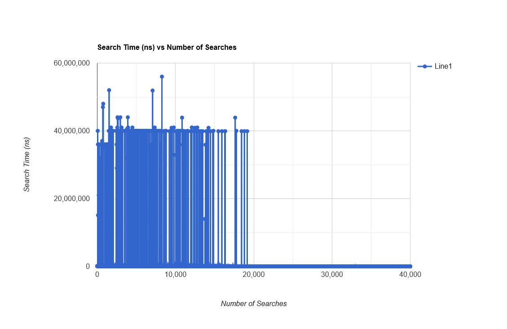
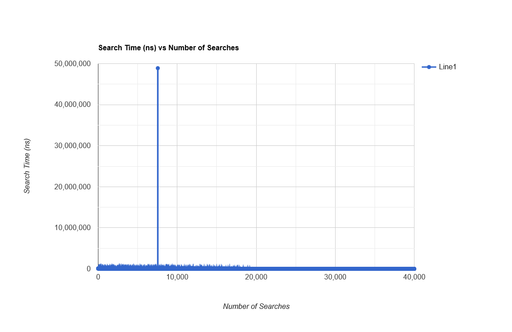
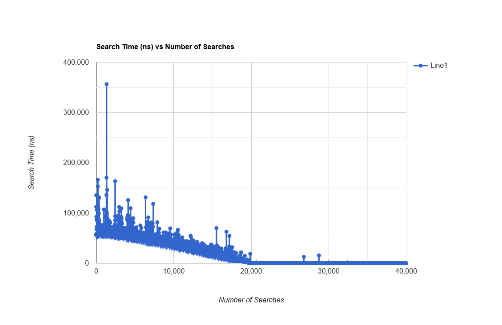

Week 11 - March 27-31
Introduction
This week we are going to look at CPU scheduling. Specifically, we will look at the "nice" value of a process,
different types of scheduling, and CPU affinity.
Videos
Quiz
Lecture Material
Labs
Assignment
Assignment 2 (due April 14).
Sample Code
Scheduling Priority - The "Nice" Value
- Code that demonstrates the use of get/setpriority() to get and set the process "nice" value in Linux can be found at:
nestedLoop.cpp,
nestedLoop2.cpp and
Makefile.
The batch files start.bat and
stop.bat starts off and stops
20 processes of nestedLoop2 (three nested for-loops) to compete for the processor with nestedLoop
(also 3 nested for-loops).
stop.bat.
The data files show that nestedLoop runs faster with lower "nice" values. Note that for "nice" values below 0,
the process has to be run as super user.
searchTime19.dat (nice value of 19),
searchTime0.dat (nice value of 0) and
searchTimeMinus20.dat (nice value of -20).
Scheduling Policy - First In/First Out
- In SEP200 assigment 2 had you implement a weighted list. The graph of search time versus number of searches showed spikes due to
the CPU scheduling. We are going to run the weighted list test program for differing schedule policies in parallel with 20 competing
processes (nestedLoop2). The first test is with no changes to the scheduling policy. The second test is with scheduling set to
SCHED_FIFO but with priority set to the default "nice" value of 0. The third test is with scheduling set to SCHED_FIFO but
with the priority set to the lowest "nice" value of -19. All tests were run as super-user. The test file is:
WeightedListMainTimer.cpp. Note that WeightedList.h (the
solution to assigment 2 of SEP200) is not given.
Source code for the competing processes, the Makefile, and the start and
stop batch files are as follows:
nestedLoop2.cpp,
Makefile,
start.bat and
stop.bat.
The resulting data files are given below:
searchTimeBase.csv (the default case),
searchTimeFIFO99nice0.csv (SCHED_FIFO, nice=0) and
searchTimeFIFO99niceMinus20.csv.
The following graphs show how poorly the default case performs. With FIFO scheduling and with the default nice value of 0
there is improvement, in that the process has full access to the CPU when competing with other processes of the same nice value,
but must wait for processes that are less nice. With FIFO scheduling and a nice value of -20, the process only competes for
the CPU with other processes of nice value -20.
Default Scheduling

SCHED_FIFO with nice=0

SCHED_FIFO with nice=-20

Scheduling Policy - Round Robin
- One might be curious about that CPU slice time. Code that gets the CPU slice time for Round Robin Scheduling for
competing processes can be found at:
nestedLoop.cpp,
nestedLoop2.cpp,
Makefile,
start.bat and
stop.bat.
The CPU slice time is found to be in the order of 0.1 seconds.
Scheduling Policy - Yielding the CPU with Round Robin
- Linux allows a process to yield the CPU to other processes. The following code contains a nestedLoop process in
competition with 20 nestedLoop2 processes. These 20 nestedLoop2 processes will yield the CPU after one of its
internal nested loops has completed. The result is that nestedLoop can run much faster sinces these competing
processes have yielded the CPU to it. Test code can be found at:
nestedLoop.cpp,
nestedLoop2.cpp,
Makefile,
start.bat and
stop.bat.
The resulting data file for nestedLoop can be found at
searchTime.dat.
CPU Affinity
- With multiple CPU cores, a process can be attached to a particular processor or particular processors. There are
advantages for a process to stick with one processor. To find out how many CPU cores you have on your system,
execute one of the two commands from the command line:
$ lscpu
$ cat proc/cpuinfo
Code that test the cpu affinity features can be seen at:
nestedLoop.cpp and
Makefile.